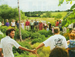

Creating Community
Read all about better living through community cooperation and greener homes in intentional communities.
By Dan Chiras and Diana Leafe Christian
June/July 2003
It Takes an Ecovillage
By Dan Chiras and Diana Leafe Christian
Nestled in the rolling hills of rural northeastern Missouri, in the middle of what was once 280 acres of corn and soybean fields, lies a town center unlike any other in the United States.
This place, just outside Rutledge, Missouri, is called Dancing Rabbit Ecovillage. Small passive-solar straw bale cabins with dun-colored earthen plaster walls and white metal roofs, a larger two-story straw bale residence, and a tall metal grain bin cleverly converted into studio apartments are clustered together. Photovoltaic panels pepper the yards and rooftops. Cars, which run on a vegetable oil fuel called biodiesel, are corralled together instead of parked outside each residence. Gardens abound.
This experiment in living on the land and in community truly is a grassroots movement, arising from the rolling hills of northeastern Missouri. In 1994, to "push the envelope" for environmental and social sustainability, Dancing Rabbit's young eco-activist founders created a rigorous ecological covenant, including mandates for building with local and recycled materials and for establishing a car-sharing co-op and fueling their vehicles with biodiesel. But their commitment to sustainable living goes beyond their environmental ethic, into the realm of social and economic sustainability. Residents make decisions by consensus, eat most meals together and generate their own homegrown entertainment, from musical events to yoga to study groups. As residents of a model ecovillage demonstration site, they teach courses on natural building and host throngs of eager visitors each year.
CREATING CONNECTIONS
"Ecovillages are intentional communities dedicated to creating and demonstrating ecological, social, economic and spiritual sustainability," Cleveland EcoVillage member Manda Gillespie writes in Communities magazine. "(Although) they take many forms, from rural to urban, from small experiments to large districts in transition, and exist in many cultures and geopolitical climates, all have made a commitment to model community development while considering how present actions affect future generations."
In their book, Ecovillages and Sustainable Communities, authors Diane and Robert Gilman describe ecovillages as "human-scale, full-featured settlements, where human activities are harmlessly integrated into the natural world in a way that is supportive of healthy human develop ment, and (which) can be successfully continued into the indefinite future."
Ecovillages attempt to provide housing, income-producing work and social opportunities on-site, creating as self-reliant a community as possible. To achieve their goals, proponents typically rely on permaculture design in planning the sites, looking to nature as a model. They also make efforts to build energy efficient and nontoxic houses; organically grow much of their own food; eliminate waste; conserve and recycle water and energy; and use renewable energy power when possible. Most ecovillages limit their size to ensure that through some form of participatory decision-making, such as consensus, each member can influence the community's direction.
Ecovillages are a worldwide movement. Many well-known ecovillage projects were launched on other continents, including Findhorn in Scotland (1962), Lebensgarten in Germany (1985) and Crystal Waters in Australia (1988). The 100-household Munksoegaard Ecovillage near Copenhagen, Denmark, won first prize in a 2000 Danish competition for the best sustainable design for the 21st century. And construction is to begin soon on the first such project in Japan, Kobunaki Ecovillage, a 250-home settlement on 30 acres near Kyoto.
The Global Ecovillage Network, an organization that helps connect and support sustainable settlements, estimates more than 15,000 identified sustainable community experiments exist today. To foster a more holistic viewpoint, GEN has broadened the definition of ecovillages beyond the ecological aspect of sustainability to include social sustainability (cooperation and democratic decision-making) and spiritual sustainability (supporting its members' shared or diverse spiritual beliefs and practices).
"From the early stages of our networking activities, we and other ecovillage activists considered whether it would be useful and appropriate to specify criteria and establish a minimum threshold of achievement for a community to identify itself as an ecovillage," writes Albert Bates, GEN member and director of the Ecovillage Training Center at Summertown, Tennessee, in Communities magazine. "We decided that we're not about sitting in judgment and monitoring; rather, we're encouraging everyone to do what they can in order to live sustainably.
DESIGN FOR THE FUTURE
While they have certain commonalities, every ecovillage has its own design for the future. One of the most common strategies for community design draws from the concept of co housing.
A type of intentional community, cohousing developed in Denmark in the early '70s and was introduced to North America in the late '80s. In cohousing developments, residents live in smaller-than-average housing units and share a large community building where they dine together several evenings a week. Residents own their own homes and share ownership of all common facilities. They often design and build the community themselves, though increasingly they partner with a local development company. Often they begin with undeveloped land. like Ecovillage at Ithaca, in Ithaca, New York, or farmland, like Munksoegaard. whose founders built five 20-unit cohousing clusters around the original farmhouse.
Cohousing is a good fit for ecovillages because of its many environmental benefits. which include efficiently using land through the building of attached or multilevel units and sharing green space. Renewable energy systems, such as photovoltaic panels, high-efficiency water heaters or greywater systems also become more feasible when housing units are linked together.
The sheer organizing power of community also makes other endeavors easier. Centralized facilities make composting and recycling easy. Many communities establish common gardens where residents share the responsibilities of tending and harvesting. (assuredly, the bounty never goes to waste)! Carpooling becomes more convenient. although the biggest reduction in reliance on the auto comes from the fact that a resident's social group generally resides in the immediate area. Cohousers don't have to go far to enjoy a meal or visit with friends!
FROG AND SONG
Cohousing lies at the heart of Ecovillage at Ithaca, which currently consists of two 30-household neighborhoods with a common house, each on 3 1/2 acres. In the first neighborhood, known as FRoG (First Residents Group), a short pedestrian walkway winds among the flowers, herbs, small fruit trees and shady trellises nestled between two rows of russet-colored two-story duplexes.
Forty-five households currently live in two of three planned small, densely clustered neighborhoods two and a half miles from downtown Ithaca. Residents live in energy-efficient, passive-solar homes, recycle almost everything they use, share ownership of their common facilities and make community decisions by consensus. Half the adult wage-earners work at least part-time on site, in home offices or rented offices in the common house. They carpool extensively. participate in car-sharing and ride the bus, having successfully lobbied the local bus company to make a stop by their entry- road.
The large, two-story common house sits at the entrance to the village. Here, residents gather together to cook and dine several nights a week. Some also wash their clothes in the shared laundry room, and let their teens socialize in a sound-proofed hangout room enhanced by a music system. A children's playroom with tumbling mats and large pillows also is used for yoga, meditation, meetings and classes.
Homes in the village receive passive solar gain through 14-foot-high, triple-glazed window-walls. Although the neighborhood currently uses grid power, the south sides of the gable roofs are pitched at just the right angle for the photovoltaic panels they'll add in the future. Clusters of six to eight homes are linked through underground conduits to a central utility room with two natural-gas-fired boilers that supply zoned radiant heat and hot water to each home. This decreases energy use and utility metering costs, keeps combustion byproducts out of the homes and will allow easy retrofitting to solar hot water heating in the future. Residents conserve water through 1 1/2-gallon toilets and low-flow faucets, and by watering their heavily mulched gardens only during the coolest part of the day. With simple energy conservation measures and wise use, Ecovillage at Ithaca residents consume just 39 percent of the electric power, 41 percent of the natural gas and 22 percent of the water used by the average household in the northeastern United States.
SoNG (Second Neighborhood Group), still under construction, is similar, except some of the individual homes are powered by solar panels and have composting toilets and heat-recovery ventilators. Fifteen homes are built and occupied; the neighborhood will be complete when 30 households are in residence.
At Ecovillage at Ithaca, sustainability goes beyond the home, too. Residents have established a large community garden, and chickens and sheep occupy a 3-acre meadow. Several members have established an organic community supported agriculture (CSA) farm, producing everything from greens to beans. Future plans include building a biological wastewater treatment facility and greywater recycling system; creating a village center for dances, classes, performances and sports; establishing a U-pick organic berry farm and orchards; and building a village cemetery.
Central to the members' ecovillage vision was the preservation of 90 percent of their 176 acres as open space for organic agriculture, woods, meadows and wetlands, and the establishment of 50 acres as a permanent conservation easement, administered by a local land trust.
GREEN CITIES, GREEN ACRES
But not all ecovillages focus on preserving green acres. A testament to this is the ecovillage growing in the heart of one of the most populous cities in the United States: Los Angeles.
Founder Lois Arkin began Los Angeles EcoVillage as a response to the 1993 riots in that city. At that time, racism, crime and drugs were prevalent in the Latino/Korean neighborhood that Arkin calls home. Graffiti sullied the walls of apartments, houses and commercial buildings; families were leaving in droves.
To stop the mass exodus, some serious community building needed to take place. Arkin and a few of her neighbors launched a neighborhood networking newsletter, went door-to-door to meet people, and organized neighborhood events, from planting fruit trees on the parking strips to hosting a brunch in the middle of an intersection.
"People thought we were crazy," Arkin says, "but traffic did slow. And some drivers even stopped to join us for tea!"
Through Arkin's efforts, the nonprofit sponsoring organization, Cooperative Resources and Services Project, raised more than $1 million in low-interest loans to buy two 80-year-old apartment buildings, which provide permanently affordable housing to residents. LA Ecovillage is now in the process of buying the buildings from the nonprofit to take the next step in economic self-reliance and create their own resident-owned housing co-op.
Today, the village is 35 "intentional neighbors" strong. Besides sustainably renovating the apartment buildings, residents have established several small organic gardens, planted 100 fruit trees in their neighborhood, and set up shared compost and recycling facilities. They're retrofitting their apartment buildings with environmentally friendly materials, and are creating plans to add solar hot water. Resident T.H. Culhane's apartment is entirely off the grid. Twelve solar panels on the roof and a backup hike-powered generator power an air conditioner, freezer, phone, computer, radio, TV and VCR, lights, generators, pumps and Culhane's electric guitar (though not all at the same time).
LA Ecovillage neighbors meet weekly to make consensus decisions about the buildings and the community, and gather for Sunday potlucks and spontaneous midweek meals in the courtyard garden or lobby.
About a dozen of the residents make some percentage of their living at home, offering services to their neighbors such as maintenance and repair, remodeling and housecleaning. Embryonic businesses onsite include a bike repair co-op and a bed and breakfast; future entrepreneurial plans include a healing center and a food co-op and cafe.
In order to encourage walking, bicycling or riding the bus, all car-free households receive a $20 monthly discount on rent. Of 35 active neighbors, 13 moved to the community without cars, and seven more have shed their cars since moving in. They're redesigning their street to slow traffic, and the city has committed more than $250,000 to implement the plan. They also have applied for a grant from automotive company DaimlerChrysler for 10 small electric vehicles, with which they plan to organize a neighborhood car co-op.
CITY VERSUS COUNTRY CONCERNS
With fewer restrictions on land use and building codes, rural ecovillages can experiment with green building and alternative systems.
Founders of urban ecovillage projects must usually forego any dreams of straw bale or cob structures, because building codes often are rigidly enforced. Yet urban ecovillagers have the advantage of finding abundant recycled building materials and unused warehouses, old factories and similar buildings in economically depressed neighborhoods. With enough energy, sweat equity and willingness to meet, respect and learn from existing neighbors, urban ecovillagers often can create effective demon stration models more quickly than their rural counterparts.
While urban ecovillagers focus on community renovation and rejuvenation, rural ecovillages literally start building from the ground up-frequently using cob construction and earthen plasters on their homes. Less restricted by building codes and regulations, they often can build with alternative materials, and design and employ innovative systems for water treatment and power generation.
While urban or suburban ecovillage projects often are built and finished all at once, rural ecovillages tend to build incrementally, creating perennial construction zones filled with bare patches of graded, un-landscaped soil; stacks of lumber and straw bales; heaps of clay and barrels of slaking lime; and piles of construction debris. Because recycled materials are highly valued, visitors must often pick their way around stacks of what for some are valuable reusable goods, and for others, unsightly piles of junk.
Earthaven Ecovillage, tucked in the verdant western North Carolina hills near Black Mountain, sits on 320 forested acres with abundant springs and streams. Its 40 residents live in small passive-solar dwellings with apricot-colored earth-plastered walls and green metal roofs. Most lumber for building has been felled and milled on site.
Solar panels and a stream-side micro-hydro unit power the village: wood or propane heats the homes in winter; composting toilets recycle human manure; and greywater is clarified in small constructed wetlands.
Although rural ecovillages often are established in idyllic settings, these projects are not always comfortable. Neither Dancing Rabbit nor Earthaven has enough housing. Both are frequently dusty or muddy. Both are in areas where summers are hot and humid, but air conditioning is eschewed as it taxes the renewable energy systems too completely. In winter, water lines freeze at Earthaven, and electricity can be scarce after a week of cloud cover. Members can go for days without showers, their computers inoperable, cooking dinner or reading by flashlight and candles.
Rural ecovillages also can be plagued with difficulties of making a living. Most residents of Ecovillage at Ithaca and Los Angeles Ecovillage are able to keep the jobs they had, although many changed their mode of transportation, and some now do more work at home. But Earthaven is 50 minutes, and Dancing Rabbit 90 minutes from jobs in the cities.
A handful of Earthaven members formed the worker-owned Forestry Co-op, felling and milling community trees and building timber-framed homes, and a few others operate on-site businesses that employ other members part time (Red Moon Herbs, Permaculture Activist magazine, and soon, a tree nursery), but many barely cover their expenses doing odd jobs for others or taking part-time jobs in nearby towns. A few have intermittent consulting gigs as permaculture teachers or landscape designers; some commute several days a week to a nearby college town; and several live on retirement or investment income.
At Dancing Rabbit, several members have sufficient computer skills to make a good living telecommuting to jobs in Silicon Valley. Others work construction on and offsite; a few work for the community doing repair and maintenance, gardening or cooking. Some work cyclically, alternating their time between work and leisure.
Although ecovillage living is not without its challenges, residents avow the rewards are many.
"Earthaven is a positive response to the world crisis," says cofounder Chuck Marsh. "It's an opportunity to figure out how to live social and ecologically responsible and spiritually conscious lives in right relationship with the natural world. We desperately need living examples, and the best examples to be found are in the ecovillage movement."
IT AIN'T EASY BEING GREEN
Cohousing-based urban and suburban projects like Ecovillage at Ithaca often are funded by two-salary professional families that buy into them, are aided by bank financing for the construction loan and individual mortgages, and sometimes supplemented by grants from nonprofits or government agencies. Urban retrofit projects affiliated with nonprofits, like those in Los Angeles and Cleveland, also tend to get grants and low-interest loans with interest-only payments for several years. But rural, more ecologically radical projects such as Dancing Rabbit and Earthaven face a stiffer challenge. Most don't obtain bank financing to buy their properties, partly out of choice and partly because of many banks' refusal to back alternative construction methods. Members don't secure construction loans or mortgages to build individual homes, either, primarily because they don't want them-and they can't qualify anyway since they don't have title to their home sites but lease them from their communities. To purchase their properties, founders often borrow money from friends, family and more affluent members. As they can afford it, they construct their homes incrementally.
ZONING: THE BANE OF ECOVILLAGES
Like most urban cohousing communities, Ecovillage at Ithaca underwent the expensive, time-consuming process of petitioning local planning authorities for a higher population density per acre through clustered housing and preserved open space. Instead of engaging themselves in potential planning battles, Dancing Rabbit and Earthaven residents established their villages in counties with no zoning. But the founders of O.U.R. (One United Resource) Ecovillage in rural British Columbia helped create a whole new zoning designation in their district specifically to accommodate ecological demonstration sites like theirs. In 1999. with the help of permaculture designers, a local land-use consultant, interested local elected officials and the planning board, they undertook a series of public hearings and on-site open houses for neighbors. Taking into account the suggestions, needs, and concerns of these sources, members of O.U.R. Ecovillage and the local planners wrote the new legislation, which allowed for multiuse zoning on their property: Woodlands/Wetlands Conservation, for sensitive ecosystems, woodlot management areas and nature trails; Agricultural, for organic gardening and animal husbandry; Ecological Education and Infrastructure, for educational activities and guest housing; and Residential, for clustered housing and natural-building demonstration sites. After receiving overwhelming public support for this initiative, the Regional District gave unanimous final approval in 2002.
SEEDS OF CHANGE
"We stand at the junction between two millennia," says Albert Bates of the Global Ecovillage Network. "The past millennium was about building societies that ran on fossil sunlight and militarism. The next one, still a mystery, must be more conscientious and humane, or we won't survive. It's on the shoulders of ecovillage pioneers that the dream rests for peace, security, prosperity, family and happiness for the coming generations of our children-whether we or they recognize it yet."
Author Dan Chiras writes about community issues, natural building and energy efficiency. Diana Leafe Christian is editor of Communities magazine and author of Creating a Life Together: Practical Tools to Grow Ecovillages and Intentional Communities (see MOTHER's Bookshelf, Page 94). She lives at Earthaven Ecovillage in North Carolina.
Resources
BOOKS AND PUBLICATIONS
Creating a Life Together: Practical Tools to Grow Ecovillages and Intentional Communities, Diana Leafe Christian. On MOTHER'S Bookshelf, Page 94.
Communities Directory. Fellowship for Intentional Community, 2002. (800) 462-8240; directory.ic.org
Communities magazine. Quarterly publication of the Fellowship for Intentional Community. (800) 462-8240; fic.ic.org/cmag/
Ecovillage Living: Restoring the Earth and Her People, Hildur Jackson and Karen Svensson, eds.
Ecovillages and Sustainable Communitie s: Models for 21st Century Living, Jillian Conrad, ed.
Organizations
Ecovillage Network of The Americas (ENA): (931) 964-4324; ena.ecovillage.org.
The Fellowship for IntentionalCommunity: (800) 462-8240; fic.ic.org
The Cohousing Network: (510) 844-0865; www.cohousing.org
Conferences
2003 North American Cohousing Conference June 19-22,
University of Colorado, Boulder. (303) 772 5851; www.cohousing.org
Mother Earth News
 Tony Sirna (6) The many facets?and faces of community at Dancing Rabbit Ecovillage near Rutledge, Missouri. |
Courtesy Ecovillage at Ithaca Pictures of life at Ecovillage at Ithaca, New York. Above: A pathway lined with garden beds winds through the neighborhood to the common house. |
Rod Rylander Top: An annual community bake-off - ""Guys Bake Pies"" -is just one of the many creative community events. Above: An on-site community upported agriculture (CSA) farm provides summertime sustenance to community members. |
|
Tony Sirna With fewer restrictions on land use and building codes, rural ecovillages can experiment with green building and alternative systems. Top: An Earthaven family outside of the straw- bale high-rise. Above: A grain bin-turned-shelter at Dancing Rabbit Ecovillage near Rutledge, Missouri. |
Tony Sirna Although each developing ecovillage faces its own set of unique challenges, collectively, their positive impacts are being recognized at the global level. In 1998, the United Nations named ecovillages in their ""Top 100 List of Best Practices"" |
|
|
 |
|
|